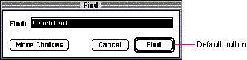
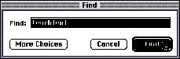
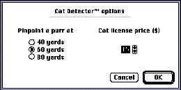
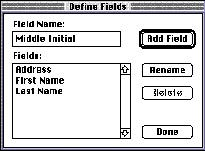
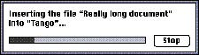

|
ButtonsA button is a rounded rectangle that is named with text. Clicking a button performs the action described by the button's name. Buttons usually perform instantaneous actions, such as completing operations defined by a dialog box or acknowledging an error message. A button's width is sized to fit the name it surrounds; the standard width for OK and Cancel buttons is 59 pixels. Standard button height is 20 pixels. Figure 7-1 shows some typical buttons in a dialog box.Figure 7-1 Buttons in a dialog box  Button Behavior |
|
|
When the user clicks a button, the button highlights (inverts) to give visual feedback to the user that indicates which item has been clicked. All alert boxes and modal dialog boxes that use the ModalDialog procedure exhibit this behavior. If you implement your own controlling mechanism for dialog boxes or alert boxes, be sure to include this behavior. For buttons that are activated by using a keyboard sequence, the Dialog Manager inverts the button for eight ticks, which is long enough for the user to see that the keyboard event has taken effect. (You must invert the Cancel button when the user presses Command-period or the Escape key; the Dialog Manager does not handle these events.) If the user presses the mouse button while the pointer is over a button, the button stays inverted until the user releases the mouse button or moves the pointer away from the button. The button tracks the mouse movement as long as the user keeps the mouse button depressed. If the user moves the pointer back over the button, it is highlighted. If the user releases the mouse button while the pointer is not over the button, nothing happens. Figure 7-2 shows a button that is highlighted to provide feedback. |
|
Figure 7-2 A
highlighted button
 The default button should be the button that represents the action that the user is most likely to perform if that action isn't potentially dangerous. To denote a default button, draw an additional border of three black pixels, separated by a border of one white pixel, around it to let the user know that it is the default. (In alert boxes, the Macintosh Toolbox outlines the default button.) When the user presses the Enter key or the Return key, your application should respond as if the user clicked the default button. |
|
|
|
Don't use a default button if the most likely action is
dangerous--for example, if it causes a loss of user data.
When there is no default button, pressing Return or Enter
has no effect; the user must explicitly click a button.
This guideline protects users from accidentally damaging
their work by pressing Return or Enter. You can consider
using a safe default button, such as Cancel.
Don't display a default border around any button if you use the Return key in text entry boxes. Having two behaviors for one key can confuse users and make the interface less predictable. In addition to the action button or buttons, it's a good idea to include a Cancel button. This button returns the computer to the state it was in before the dialog box appeared. It means "forget I mentioned it." Always map the keyboard equivalent Command-period and the Esc (Escape) key to the Cancel button. These keyboard equivalents, along with Return and Enter, are accelerator keys and serve the purpose of letting the user respond quickly to a dialog box or an alert box. In general, it's not a good idea to assign other keyboard equivalents to buttons. If you find it useful to assign keyboard equivalents to some buttons that are used very often in your application, be sure to follow the guidelines in Chapter 4, "Menus," in the section "Keyboard Equivalents," which begins on page 101. See the chapter "Dialog Manager" in Inside Macintosh: Macintosh Toolbox Essentials for information about implementing these behaviors for buttons. Button Names |
|
|
Whenever
possible, name a button with a verb that describes the
action that it performs. Button names should be limited to
one word whenever possible. You should never use more than
three words for a button name. Use the caps/lowercase style
of capitalization for button names. In general, this means
that you capitalize every word except articles (a, an,
the), coordinating conjunctions (for example, and,
or), and prepositions of three or fewer letters. You
also capitalize the first and last words of the name; since
button names should seldom be more than two words, almost
all words in button names should be capitalized. The
specific rules for this type of capitalization appear in
detail in the Apple Publications Style Guide.
Button names usually appear in 12-point Chicago. If a button is not available, it appears dimmed. On a black-and-white monitor, a dimmed button and its name are dithered to 50 percent gray. On color systems, dimmed items appear in true gray. Chicago is designed specifically to display well on the screen in all states, including dithered and gray. Other fonts, such as Geneva, which is sometimes used for button names, are rendered illegible when they are dithered. Buttons usually cause instant actions, described by the name of the button. Occasionally they require more information before acting. If a button displays another dialog box, use the ellipsis character in the button name to indicate this to the user. (Do not include the ellipsis character if the dialog box appears only to ask users to confirm their actions.) The most appropriate situation for a second dialog box to appear would be when a modeless dialog box needed additional information on a limited basis to complete an action. See the section "Stacking Modal Dialog Boxes," which begins on page 190 in Chapter 6, "Dialog Boxes," for a discussion of the dangers of dialog boxes that generate more dialog boxes. A user typically reads the text in a dialog box until it becomes familiar and then relies on visual cues, such as button names or positions, to respond. Names such as Save, Quit, and Erase Disk allow users to identify and click the correct button quickly. These words are often more clear and precise than names such as OK, Yes, and No. If the action can't be condensed into a word or two, OK and Cancel or Yes and No may serve the purpose. If you use these generic words, be sure to phrase the wording in the dialog box so that the action the button initiates is clear. Figure 7-3 shows a dialog box with appropriate OK and Cancel buttons. |
|
Figure 7-3 A
dialog box with OK and Cancel buttons
 Use Cancel for the button that closes the alert box or dialog box and returns the application to the state it was in before the alert box or dialog box appeared. Cancel means "dismiss the operation I started, with no side effects." It does not mean "I've read this dialog box" or "stop what's going on regardless." Ideally, you should never put your users in a situation in which they can't return to the state that existed before an operation began (and before the dialog box appeared). But if it can't be avoided, use OK or Stop, depending on the situation, instead of Cancel. Sometimes it is more appropriate to use the word Done instead of OK for the name of a button that closes the alert box or dialog box and that accepts any changes made while the dialog box is displayed. Figure 7-4 shows a dialog box that illustrates this guideline. In this dialog box, the user creates, renames, or deletes fields and then dismisses the dialog box, so the Done button means "I have finished editing fields and want to close the dialog box." Figure 7-4 A dialog box with a Done button instead of an OK button  This dialog box uses Done because clicking the Done button maintains any changes that were made subsequent to the display of the dialog box. If the button were named OK, the user might confuse it with the Add Field button, which accepts changes but doesn't close the dialog box and therefore allows the user to make other changes. The Done button is most often used in dialog boxes in which the user can define more than one of an item, for example, field names, without closing the dialog box. In these situations it is often unreasonably difficult to return the user to the state that existed before the operation began, so there is no Cancel button. Use Stop for a button that halts an operation midstream while accepting the possible side effects. Stop may leave the results of a partially complete task intact, whereas Cancel always returns the computer to its previous state. It's appropriate to change the button name in the middle of the operation from Cancel to Stop if you can determine when it's no longer possible to cancel. The dialog box shown in Figure 7-5 uses a Stop button because clicking the button maintains the text that is already inserted while preventing completion of the insert operation. Figure 7-5 A progress indicator that uses a Stop button  In an alert box that requires confirmation, use a word that describes the result of accepting the message in the dialog box. For example, if a dialog box says "Revert to the last saved version of this document?" name the button Revert rather than OK. Figure 7-6 shows a dialog box with appropriately named buttons. Figure 7-6 A confirmation alert box with appropriately named button
|
|
|
A modal dialog box usually cuts the user off from the task.
That is, the user can't see the area of the document that
changes when choices are made in the dialog box until
dismissing the dialog box. Once the area becomes visible
because the user dismisses the dialog box, the user sees
whether the changes are the desired ones. If the changes
aren't appropriate, then the user has to repeat the entire
operation. To provide better feedback to the user, you need
to provide a way for the user to see what the changes will
be. Therefore, any selection made in a modal dialog box
should immediately update the document contents, or you
should provide a sample area in the dialog box that
reflects the changes that the user's choices will make. In
the case of immediate document updating, the OK button
means "accept this change" and the Cancel button means
"undo all changes done by this dialog box."
Some applications use an Apply button to approximate the behavior of immediately updating the document or using a sample area. This method confuses the meaning of OK and Cancel and is not recommended. If you must implement modal dialog boxes with an Apply button, you need to include a Cancel button. When there is an Apply button, the Cancel button undoes the results of the Apply operation and dismisses the dialog box. The OK button dismisses the dialog box and applies the settings made in the dialog box, even if the Apply button wasn't clicked. The user must always be able to undo any actions caused by the dialog box. |